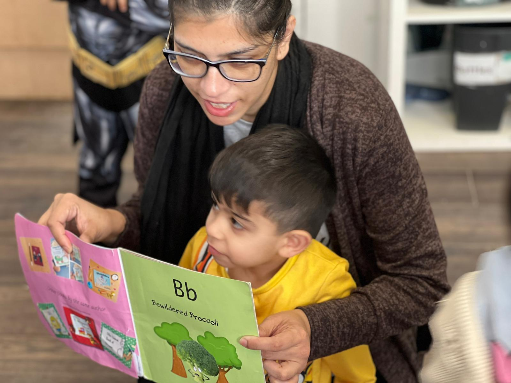

At Lemon Tree Preschool, early reading is viewed as part of a child’s natural development rather than something that should be rushed or formally taught too early. Many UK parents ask how early literacy begins in preschool settings and what early reading without pressure really looks like in practice.
The approach is guided by the EYFS framework, which focuses on communication, language, and play-based learning. This ensures children are supported through storytelling, conversation, and exploration instead of formal instruction. You can also read more about our overall approach on the official home page of Lemon Tree Preschool, where our play-based philosophy is explained in detail.
Understanding Early Reading Without Pressure
Early reading without pressure means children are gently introduced to language, sounds, and stories without being pushed into formal reading before they are ready.
This aligns with the EYFS Literacy area, which focuses on developing early communication skills before structured phonics begins. In practice, children are encouraged to enjoy books, listen to stories, and build vocabulary through everyday experiences. Our wider curriculum approach explains how literacy is embedded across all learning areas in a natural way.
Why a Pressure-Free Approach Matters in Early Literacy Development
Research from the National Literacy Trust shows that early enjoyment of language plays a major role in later reading success. When children are not pressured, they are more likely to develop curiosity, confidence, and emotional security around books.
A gentle, early literacy for preschool children approach also supports:
- Stronger listening and attention skills
- Early vocabulary development
- Positive attitudes towards reading
- Better communication skills over time
These outcomes are closely linked to EYFS goals such as communication and language development.
How We Support Kids to Develop Reading Naturally
The Lemon Tree Preschool’s early reading approach focuses on creating everyday opportunities for children to experience language naturally.
This child-led reading development approach ensures that children explore reading readiness at their own pace, supported through play, conversation, and interaction.
Creating a Language-Rich Environment
Children are surrounded by spoken and written language throughout the day. Labels, books, conversations, and visual prompts help them understand that words carry meaning.
Storytelling and Shared Reading Experiences
Story time is a key part of early literacy development in preschool settings. Educators read aloud, ask questions, and encourage children to respond to stories.
This builds:
- Listening and comprehension skills
- Emotional understanding
- Early narrative awareness
These shared experiences also reflect the Lemon Tree Preschool teaching methods for reading, where interaction is more important than instruction.
Play-Based Learning for Early Literacy
Children develop reading readiness through play-based early reading activities. Songs, role play, and imaginative games help them recognise sounds, repetition, and rhythm in language.
This supports phonics through play and helps children naturally build sound awareness before formal reading begins.
Following Each Child’s Individual Learning Pace
Every child develops differently. Some show early interest in books, while others focus on speaking or social development first.
At Lemon Tree Preschool, educators observe each child and adapt support accordingly. This ensures that pressure-free reading development in early years is always respected and learning remains child-centred.
Everyday Activities That Encourage Early Reading Skills
Early reading is not taught in isolation. Instead, it is woven into daily routines and experiences.
Songs, Rhymes, and Repetition: Nursery rhymes help children recognise patterns in language and develop memory. Repetition strengthens sound recognition, which is an important early literacy milestone.
Visual Learning Through Labels and Print Exposure: Children begin to recognise words when they see them used meaningfully in their environment. Labels, signs, and books help build this awareness naturally.
Interactive Group Reading Sessions: Group reading allows children to listen, respond, and share ideas. This helps build confidence and supports communication and literacy development in a social setting.
The Role of Educators in Supporting Early Reading Without Pressure
Educators guide children through language-rich experiences without applying pressure or formal expectations.
This reflects the Lemon Tree Preschool learning philosophy, which prioritises emotional security and child-led exploration. More about our ethos can be found here:
Encouraging Without Forcing Progress
Children are gently encouraged to explore books and language, but never required to meet reading targets at an early stage. This is consistent with EYFS expectations for preschool-aged children.
Supporting Confidence Through Positive Reinforcement
Encouragement helps children feel safe and confident. When children associate reading with enjoyment rather than pressure, they are more likely to engage positively over time.
Parent Involvement: Supporting Reading at Home Naturally
Parents often ask how to support early reading at home in the UK. The most effective approach is simple and consistent.
Simple Daily Reading Habits at Home
Bedtime stories, picture discussions, and talking about everyday experiences all support early literacy development.
These small interactions strengthen vocabulary and comprehension without formal teaching.
Making Reading Part of Playtime
Reading can be part of imaginative play, storytelling, or everyday conversation. This reinforces early language development naturally.
Comparing Structured Reading vs Early Reading Without Pressure
Structured reading introduces formal learning early, while an early reading without pressure approach focuses on readiness, confidence, and emotional security.
UK early years research (including the Education Endowment Foundation) supports play-based learning as the most effective approach in early childhood settings, especially for communication and literacy development.
Conclusion: Encouraging Lifelong Confidence in Reading
Early literacy works best when children feel relaxed, supported, and free to explore language in their own time. At Lemon Tree Preschool, reading is introduced through stories, conversation, and play rather than formal instruction.
This approach helps children build confidence, curiosity, and strong communication skills that support later learning. Over time, it creates a calm foundation for reading that feels natural, meaningful, and enjoyable for every child.
FAQs: Early Reading Without Pressure
What does early reading without pressure mean?
It means children are gently supported through play, stories, and everyday interactions rather than being pushed into formal reading too early.
At what age should children start learning to read in the UK?
There is no fixed age for starting to read in the UK, as every child develops differently. EYFS guidance focuses first on communication and language skills, then introduces formal reading when children are developmentally ready.
How do nurseries support early literacy development?
Nurseries support early literacy through storytelling, songs, and rich language experiences built into daily routines.
Does play-based learning delay reading development?
No, play-based learning does not delay reading development. In fact, research shows it strengthens the essential early skills children need for future reading success, such as listening, vocabulary, and sound recognition.
Is Lemon Tree Preschool good for early literacy development?
Lemon Tree Preschool follows EYFS-based, child-led learning where early literacy grows naturally through stories, play, and interaction.